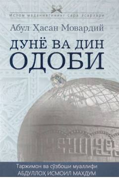

DVInsoniy odob-axloq va go'zal fazilatlar haqidagi diniy-ma'rifiy asar.
Ushbu asarda muallif insoniy odob-axloq, go'zal fazilatlar va hayotiy tajribalarni Qur'oni Karim hamda hadisi shariflar asosida tahlil qiladi. Kitob o'quvchilarga axloqiy tarbiya va ma'naviy kamolot yo'lida muhim yo'riqnomalar beradi.